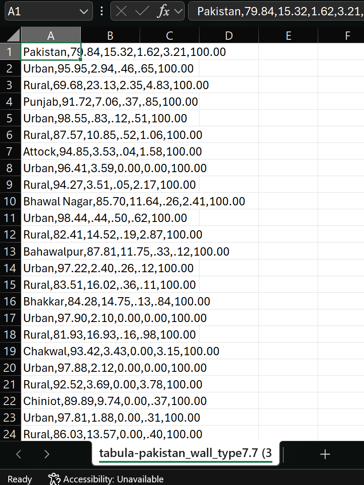
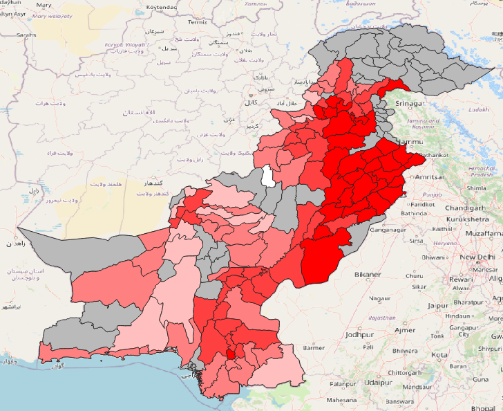

Ejercicio: Preparación de datos (importar tablas en formato PDF a QGIS)#
Características del ejercicio#
Instrucciones para capacitadores#
Attention
Este ejercicio utiliza la herramienta Tabula.technology, una aplicación de código abierto que permite extraer fácilmente tablas de un archivo PDF. Para utilizar Tabula, es necesario tener instalado Java en su equipo.
Rincón del instructor
Preparar la capacitación
Tómese su tiempo para familiarizarse con el ejercicio y el material proporcionado.
Prepare una pizarra. Puede ser una pizarra blanca física, un rotafolio o una pizarra digital (por ejemplo, una pizarra Miro) donde los participantes puedan añadir sus conclusiones y preguntas.
Antes de comenzar el ejercicio, asegúrese de que todos hayan instalado QGIS y hayan descargado y descomprimido la carpeta de datos.
Consulte ¿Cómo realizar capacitaciones? para obtener algunos consejos generales para impartirlas.
Impartir la capacitación
Introducción:
Presente la idea y el objetivo del ejercicio.
Proporcione el enlace de descarga y asegúrese de que todos los participantes hayan descomprimido la carpeta antes de comenzar las tareas.
Guía paso a paso:
Muestre cada paso y explíquelo al menos dos veces y de manera pausada para que todos puedan ver lo que está haciendo y aplicarlo en su propio proyecto de QGIS.
Pregunte con regularidad si alguien necesita ayuda o si todos están siguiendo el ejercicio, para asegurarse de que todos comprenden y realizan los pasos por sí mismos.
Mantenga una actitud abierta y paciente ante cualquier pregunta o problema que pueda surgir. Los participantes están haciendo varias tareas a la vez: prestan atención a sus instrucciones y las aplican en su propio proyecto de QGIS.
Cierre de la sesión:
Dedique tiempo al final del ejercicio a cualquier problema o pregunta relacionada con las tareas que pueda surgir.
Reserve algo de tiempo para preguntas abiertas.
Ejercicio#
Datos disponibles#
Descargue los conjuntos de datos aquí y descomprímalos.
Conjunto de datos |
Fuente |
Descripción |
|---|---|---|
Límites administrativos de Pakistán |
Se puede acceder a las fronteras administrativas (adm0-adm3) de Pakistán a través de Intercambio de Datos Humanitarios. Para este ejercicio, nos interesan los distritos (adm2) |
|
Distribución porcentual de los hogares por tipo de material utilizado para las paredes |
La tabla 7.7 de la Encuesta de indicadores sociales y de nivel de vida de Pakistán (2019-20) muestra los materiales utilizados en las paredes por hogar, expresados en porcentajes. |
Tarea 1: Pasar los datos del archivo PDF a un archivo CSV#
En su navegador, vaya a Tabula.technology y descargue la aplicación.
Tabula
Tabula es una aplicación de código abierto que permite extraer tablas de datos de archivos PDF y guardarlas como archivos .csv. Los archivos .csv pueden importarse a Excel, QGIS u otros programas de manipulación de datos.

El sitio web Tabula.technology con los enlaces de descarga a la izquierda.#
Descomprima el archivo descargado en una ubicación de su elección (por ejemplo, Programas, Escritorio, etc.).
Abra la carpeta donde haya descomprimido el archivo y ejecute la aplicación “Tabula”.

Se abrirá una nueva ventana del navegador con esta dirección: http://localhost:8080. Esta es la aplicación. Si el navegador no se abre de forma automática, ábralo manualmente e ingrese esta dirección.

Ahora vamos a importar el archivo PDF con los tipos de pared en Tabula:
Haga clic en
Browsey vaya a la carpeta de datos del ejercicio:...\data\inputy seleccione el PDF “pakistan_wall_type7.7”. Haga clic enOpen.Haga clic en
Importy espere a que se cargue el PDF. Una vez cargado, se abrirá automáticamente.

Aquí seleccionaremos la parte del PDF que contiene la tabla de datos. Tabula espera una tabla con una fila de encabezados en la parte superior para cada columna, seguida de las filas con los datos. Si arrastramos un rectángulo sobre el PDF, podemos crear una selección en la que Tabula buscará la tabla de datos. Arrastre un rectángulo y ajuste los bordes para que la tabla encaje con la mayor precisión posible en la selección. Asegúrese de capturar solo la información relevante. Dado que los encabezados de esta tabla tienen un formato poco convencional, es mejor omitirlos para que la tabla CSV resultante sea más fácil de ajustar. Añadiremos los encabezados manualmente una vez extraídas las tablas.

Una vez que esté satisfecho con la selección, puede hacer clic en
Repeat this Selectionpara duplicar la selección en las páginas siguientes.Compruebe en las páginas siguientes que la tabla siga estando completamente contenida en la selección.
Haga clic en
Preview & Export Extracted Dataen la parte superior derecha de la ventana.Aparecerá una nueva ventana donde se mostrarán los datos. Al principio, no se verá nada. Haga clic en
Streama la izquierda.

Los datos de la tabla PDF aparecerán en la ventana principal. Revise la tabla.

Haga clic en
Export; esto guardará el.csven su carpeta de descargas.Mueva el archivo a la carpeta
/data/interim/.
¡Felicitaciones, los datos del PDF se han extraído a un archivo CSV!
Tarea 2: Limpiar los datos de errores y entradas no deseadas#
Note
Los pasos necesarios para filtrar los datos pueden variar en función del editor que utilice. En este ejercicio, veremos el flujo de trabajo con la versión gratuita de Microsoft Excel.
Abra el archivo CSV extraído en Excel. Podría verse así:
{kind=link}

Excel no reconoce automáticamente el formato delimitado por comas. Para solucionarlo, seleccione la columna A y vaya a
Data>Text to Columns. Se abrirá una nueva ventana. Deje la configuración como está y haga clic enOk.
Note
En la versión web de Excel, puede fijar las columnas seleccionando la columna A y luego yendo a Data > Split Text to Columns

La tabla de datos debería tener ahora este aspecto. Todavía faltan los encabezados de las columnas (en rojo).#
Tenemos que volver a añadir los nombres de las columnas, ya que no los extrajimos con Tabula. Haga clic derecho en la primera fila y seleccione
Insert 1 Row Above. Debería aparecer una nueva fila.Introduzca los encabezados de las columnas tal y como aparecen en el archivo PDF:
Provincia y distrito |
Bloques/ladrillos cocidos |
Ladrillos de barro/lodo |
Madera |
Otros |
Total |
|---|
Ahora podemos formatear los datos en una tabla de Excel. Esto nos permitirá aplicar filtros para eliminar las entradas no deseadas. Seleccione las columnas A a F, vaya a
Home>Format as Tabley seleccione el estilo de tabla que desee.
Ahora tenemos un archivo .csv utilizable con la información. Sin embargo, todavía hay algunas entradas no deseadas y algunos errores de formato. En primer lugar, eliminemos todas las filas con los datos sobre la distribución rural y urbana. Queremos visualizar la distribución a nivel de distrito, por lo que no es necesario distinguir entre urbano y rural.
Haga clic en la flecha pequeña situada junto a la columna “Provincia y distrito”. Se abrirá un menú desplegable.
En el menú desplegable, desmarque la casilla
Select Ally desplácese hacia abajo para marcar todas las entradas con los valoresUrbanyRural. Agregue también las entradas que tengan valores numéricos asociados aUrbanoRural. Haga clic enApply.


La tabla debería mostrar ahora solo las entradas con la palabra rural o urbano en la columna “Provincia y distrito”. Selecciónelos todos y haga clic en
Remove selected rows.Ahora, debemos eliminar el filtro que hemos aplicado.
Repasemos la tabla resultante y veamos si tenemos que corregir más entradas. En algunas entradas los valores de los porcentajes no están formateados correctamente. Copie los valores de las columnas Bloques/ladrillos cocidos, Ladrillos de barro/lodo, Madera, Otros en una celda a la derecha e introduzca el valor numérico que por error se añadió a la columna Provincias y distritos.
Guarde el archivo CSV formateado en la carpeta de datos de entrada (
.../module_5_ex_7_data_cleansing/data/input/) con el nombretabula-pakistan_wall_type7.7.
¡Estupendo! ¡Ahora podemos importar el archivo CSV a QGIS!
Tarea 3: Importar los datos a QGIS#
Note
La fusión difusa es una técnica utilizada en el procesamiento de datos para combinar dos conjuntos de datos basándose en valores similares, pero no necesariamente idénticos. Esto es especialmente útil cuando se trata de datos que pueden presentar incoherencias, como errores tipográficos o formatos diferentes.
En lugar de buscar coincidencias exactas, la fusión difusa utiliza algoritmos para comparar valores y determinar su similitud. Por ejemplo, “Jon” y “John” podrían considerarse coincidentes debido a su similitud. Cada comparación genera una puntuación de similitud que indica el grado de coincidencia entre los dos valores.
Abra QGIS y cree un nuevo proyecto.
Guarde el proyecto en la carpeta de ejercicios.
Importe los límites administrativos situados en la carpeta de entrada de datos:
.../module_5_ex_7_data_cleansing/data/input/Ahora vamos a realizar una fusión difusa: Abra la calculadora de campo para la capa denominada
tabula-pakistan_wall_type7.7e introduzca la siguiente expresión:array_first(aggregate( layer:= 'pak_admbnda_adm2_wfp_20220909', aggregate:='array_agg', expression:=ADM2_EN, filter:=levenshtein(ADM2_EN, attribute(@parent, 'Province & Disctrict')) <= 2, order_by:=levenshtein(ADM2_EN, attribute(@parent, 'Province & Disctrict')) ))
Introduzca un
Output field name, ajuste elOutput field typeaText (string)y aumente laoutput field lengtha 40.Haga clic en
Ok. El archivo CSV debería tener ahora una nueva columna. En esta columna encontrará los valores de la capa de polígonos adm2 que se han emparejado utilizando el algoritmo de fusión difusa.Ahora podemos realizar una unión de atributos seleccionando la columna
ADM2_ENy la columna de fusión difusa recién creada como columna de identificación. En la caja de herramientas de procesos, busque la herramienta “Join attributes by field value”. Haga doble clic en ella.Se abrirá una nueva ventana. Aquí, configure los siguientes parámetros:
Capa de entrada: Capa de polígonos ADM2
Campo de la tabla:
ADM2_ENCapa de entrada 2:
tabula-pakistan_wall_type7.7Campo de la tabla 2:
Fuzzy_matchCampos de capa 2 a copiar:
Burnt Bricks/Blocks, Mud Bricks/Mud, Wood, Other

Los parámetros “Join attributes by field value”#
Haga clic en
Run.
¡Felicitaciones, ya hemos unido con éxito la información del archivo PDF a una capa de polígonos!
Tarea 4: Visualización de los datos#
Abra el panel de estilo de capas y seleccione el método de simbolización Graduado.
En
Value, seleccioneBurnt Bricks/Blocks.Haga clic en
Classify.
La simbolización resultante podría verse parecida a esto:
{kind=link}

Cuanto más oscuro sea el color, mayor es el porcentaje de edificios con paredes de bloques o ladrillos cocidos. Las zonas grises son los distritos de los que no se dispone de datos.#